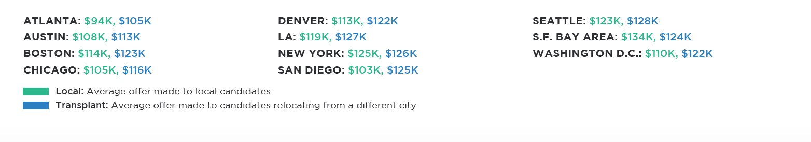

HIRED’S STATE OF SALARIES REPORT
Hired, the company on a mission to get everyone a job they love, has tapped into its
data to reveal insights on software engineers’ salaries and the hiring market more
generally. Because Hired facilitates the job searching process from the initial interview
request all the way to the final job offer, we have unprecedented visibility into salaries
across a variety of positions and companies. Most of the tools available to companies
and job seekers are flawed and inaccurate. Salary calculators don’t account for
company size, years of candidate experience or location, while many job sites are
based on anonymous, self-reported data which can vary widely in accuracy. Hired’s
data, on the other hand, is based on actual job offers made to real people.
Our inaugural State of Salaries report is part of a larger effort to bring more
transparency to the hiring process. We want to empower candidates to understand
their market value based on their skills and experience so that they can approach the
job searching process armed with information. We also want to help companies
recruit and hire with insight. We believe this transparency benefits everyone, so that
individuals can find jobs they love and companies can attract the individuals who will
drive their businesses forward.
WHERE DOES YOUR SOFTWARE ENGINEERING PAYCHECK GO THE FURTHEST?
San Francisco is infamous for high salaries and even higher rents. While San Francisco salaries are huge - $132K on average for software engineers - adjusting for cost of living paints a different picture. We used a standardized cost of living calculator to show how average salaries in each city would compare to San Francisco. For example, an engineer in Austin making $110,000 would need to make $195,000 in San Francisco to maintain the same quality of life. While it’s easy for job seekers to get stars in their eyes over the salaries in San Francisco, when you adjust for cost of living, an engineer’s salary goes further in every city in our analysis with the exception of New York.
AVERAGE SOFTWARE ENGINEER SALARY:
- ATLANTA: $163K
- AUSTIN: $195K
- BOSTON: $142K
- CHICAGO: $155K
- LOS ANGELES: $152K
- NEW YORK: $125K
- SAN DIEGO: $115K
- SEATTLE: $125K
- SF BAY AREA: $132K
- WASHINGTON D.C: $115K

STARTING A CAREER? DO IT IN SAN FRANCISCO.
Forgetting cost-of-living adjustments for a moment, our data indicates that
there are advantages to starting your career in San Francisco. Candidates
leaving the Bay Area command higher offers than candidates from
any other city in our analysis.
Bottom line: No matter where you want to work, engineers that start
their careers in San Francisco have a higher earning potential once
they move to other job markets.
 zoom_in
zoom_in
Black: Average offer for candidates relocating from San Francisco Green: The difference in salary between candidates who relocated from San Francisco and the average software engineer in that city
TRANSPLANTS VS. LOCALS: HOW DO SALARY OFFERS COMPARE?
In most cities, companies offer higher salaries to candidates who are relocating from another market. The only exception is San Francisco, where local candidates command higher salaries than those relocating from outside the Bay Area.
STARTING A NEW OFFICE? THESE CITIES GIVE YOU THE MOST ENGINEERING BANG FOR YOUR BUCK:
While job seekers are particularly interested in their potential salaries, employers can use average salary data to scale their teams. If you’ve got a $1M annual engineering budget, you can hire approximately 10 engineers in Atlanta, compared to 9 in Boston or just 8 in San Francisco.

MID-SIZED COMPANIES OFFER HIGHEST SALARIES:
Our data shows that salary and number of employees are positively correlated until we reach the 201-500 employee mark, and then the numbers start to go back down. One possible reason for this is the availability of salary alternatives as part of an overall compensation package. For example, companies with less than 200 people are usually in the series b or below stage, and can offer more equity, whereas many companies with more than 500 people are publicly traded and can offer stock packages. Those in the middle have less equity to give and typically aren’t publicly traded, so higher salaries may be a way to keep offers competitive.
METHODOLOGY
This report is based on proprietary information gathered and analyzed by Hired’s product data science team. For the purpose of this report, we focused on software engineers in 11 cities. The salaries included reflect more than 80,000 interview requests and job offers from the past year facilitated through our marketplace of more than 3,000 participating companies and 10,000 job seekers.
ABOUT HIRED
Hired is on a mission to get everyone a job they love. Starting with in-demand tech and sales roles, we’ve built a marketplace that brings together highly qualified individuals with the companies who want to hire them. Users on the Hired platform receive objective guidance throughout the interview process from a dedicated Talent Advocate, as well as the ability to compare new opportunities side by side so they can make their next career move with confidence. Employers get access to a hand-picked pool of candidates who are interested in new roles, as well as unmatched transparency into competing offers so they can recruit and hire with insight. The end result is an efficient, effective and enjoyable experience that’s far faster than traditional methods. Hired is headquartered in San Francisco, with offices in nearly a dozen cities in North America and Europe and plans to expand to a variety of industries and job categories.